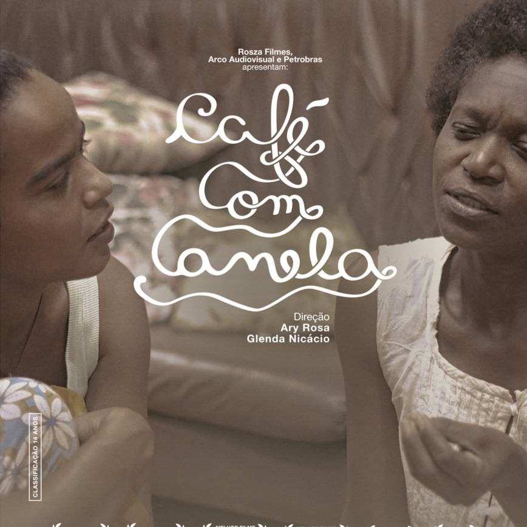

Café com Canela
Produzido em 2017 no recôncavo baiano e dirigido por Glenda Nicácio e Ary Rosa, "Café com Canela" é uma produção de representatividades e afeto. O cenário que mostra a estética da negritude, elementos do cotidiano popular do interior baiano, referências das religiões de matriz afro brasileiras, memórias intimas e a força da mulher negra constituem a narrativa. Com a morte do filho, Margarida (Valdinéia Soriano) se isola e vive com a dor da perda e com as memórias de um tempo que passou. Já Violeta (Aline Brune), segue a vida entre as adversidades do dia a dia e traumas do passado. Essas duas mulheres nos mostram como os encontros e reencontros que a vida possibilita são capazes de aguçar processos lindos de transformação e libertação entre conversas, afetos, faxinas e cafés com canela.
Trailer:
Filme completo disponivel na Prime Video